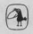

Ursula K. Le Guin UÇUŞTAN UÇUŞA
Ursula Kroeber Le Guin, 1929'da Kaliforniya'da doğdu. Babası ünlü antropolog Alfred Kroeber, annesi ise yazar Theodora Kroeber'dir. Radcliff ve Columbia üniversitelerinde edebiyat eğitimi gördü. 1950'li yıllarda fantastik öyküler ve romanlar yazmaya başladı. 1962'de ilk bilimkurgu öyküsü yayımlandı. 1974 tarihli Mülksüzler’e kadar altı bilimkurgu romanı yazdı. Bu tarihten sonra zaman zaman bilimkurgu öyküleri yazmakla birlikte romanlarında daha ziyade yarı gerçekçi/yarı fantastik temalar işledi.
Türkçe'de Mülksüzler ile başladığımız LeGuin edebiyatı, okurdan gördüğü ilgiyle birlikte, geniş bir koleksiyon oluşturdu. Yazarın Yerdeniz Büyücüsü, Atuan Mezarları, En Uzak Sahil ve Tehanu'dan on yıl sonra yazdığı Öteki Rüzgârla "Yerdeniz" dizisi bir beşleme haline geldi. Bu beşlemenin son kitabından önce yayımlanan Yerdeniz Öyküleri de aynı coğrafyada geçmektedir. Yayınevimiz ayrıca LeGuin'in Dünyaya Orman Denir, Bağışlanmanın Dört Yolu, Balıkçıl Gözü, Rocannon'un Dünyası adlı yapıtlarına bilimkurgu dizisinde yer verdi. Yazarın son kitabı, Dünyanın Doğum Günü de Metis'in yayın programında.
LeGuin'in düzyazılarını merak eden okurlarımıza, edebiyat konulu makale ve denemelerini bir araya getirdiğimiz Kadınlar Rüyalar Ejderhalar başlıklı seçkiyi öneriyoruz.
